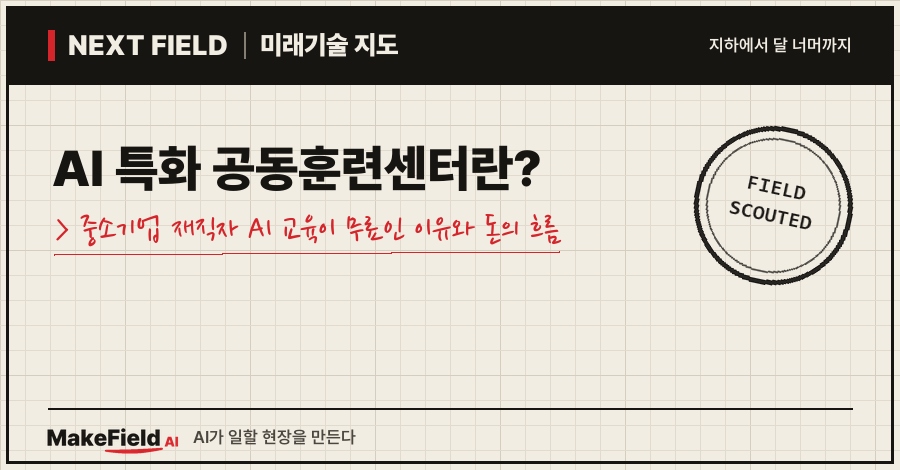
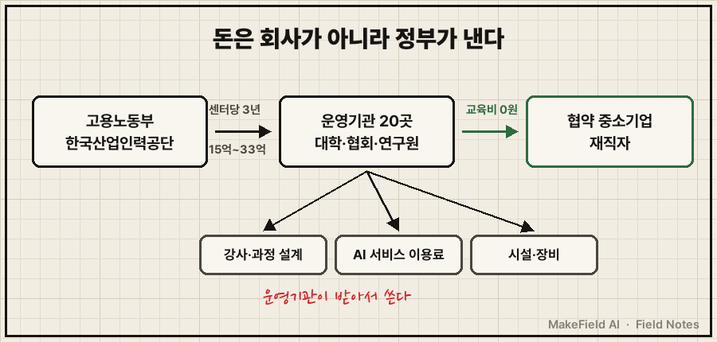
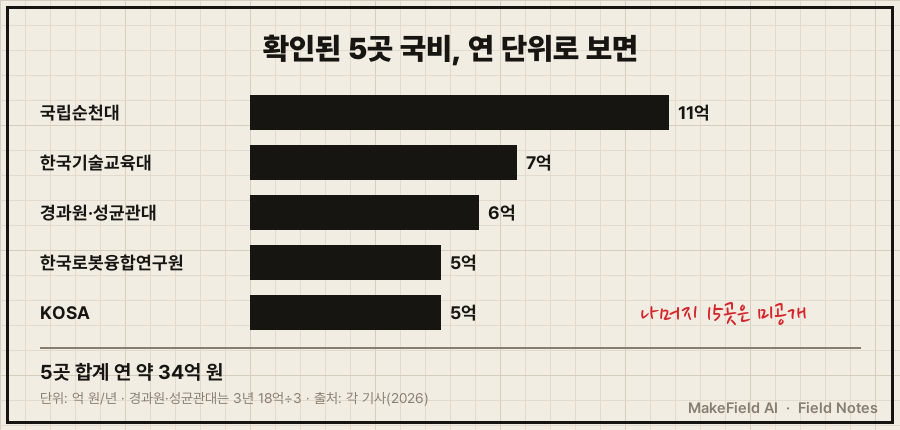
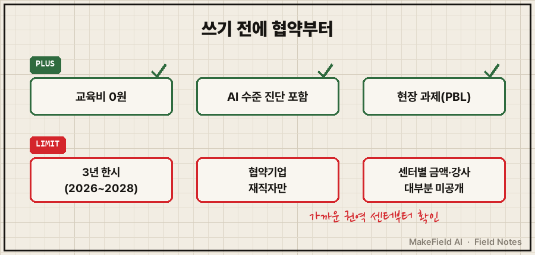

한 줄 요약: 고용노동부와 한국산업인력공단은 2026년 'AI 특화 공동훈련센터' 20곳을 선정했고(대학저널, 2026-03-31), 센터 한 곳은 3년 동안 15억~33억 원의 국비를 받아 협약을 맺은 중소기업 재직자에게 AI 교육을 무상으로 제공합니다(한국경제·헤럴드경제, 2026). 돈을 내는 쪽은 회사가 아니라 정부이고, 돈을 받는 쪽은 대학·협회·연구원 같은 운영기관이에요.
"회사에서 AI를 써야 한다는데, 직원 교육비는 누가 내지?" 고민하는 중소기업 담당자, 그리고 공짜 AI 교육이 갑자기 많아진 이유가 궁금한 분을 위한 글입니다. 2026년 10월 기준 공개 기사와 정부 자료로 차례대로 풀어 볼게요.
1. AI 특화 공동훈련센터란 무엇인가요
AI 특화 공동훈련센터란 대학·협회·연구원 같은 기관이 여러 중소기업과 협약을 맺고, 그 회사 재직자에게 국비로 AI 실무 교육을 대신 해 주는 곳이다. 고용노동부 '국가인적자원개발컨소시엄 사업'의 하나로 추진돼요(대학저널, 2026-03-31).
💡 공동훈련센터 — 직원 교육을 혼자 하기 어려운 중소기업 여러 곳을 묶어, 큰 기관이 국비로 '공동 사내 연수원' 역할을 해 주는 곳.
💡 국가인적자원개발컨소시엄 — 대학·대기업·협회가 중소기업들과 짝을 지어(컨소시엄) 재직자 직업훈련을 하고, 정부가 비용을 대는 제도.
이 제도 자체는 새것이 아니에요. 고용노동부 자료에 따르면 컨소시엄 공동훈련센터는 340곳이고, 중소기업 재직근로자 약 26만 명이 이 센터들로 직업훈련을 받았습니다(고용노동부, 2026-09-03). 2026년에 달라진 점은 그 위에 'AI 특화'라는 칸 20개가 따로 생겼다는 것이에요.
| 구분 | 내용 | 출처 |
|---|---|---|
| 추진 | 고용노동부·한국산업인력공단 | 한국경제(2026-05-21) |
| 사업명 | AI 분야 산업전환 대응 지원사업 | 헬로티(2026-05-25) |
| 선정 수 | 전국 20개 기관, 그중 거점형 5곳 | 대학저널(2026-03-31) |
| 교육 방식 | 기업 AI 수준 진단 → 단계별 교육 → 현장 적용 → 사후 코칭 | 대학저널·헬로티(2026) |
💡 AX(AI 전환) — 회사가 일하는 방식을 AI 중심으로 바꾸는 것. 디지털 전환(DX)의 AI판이다.
💡 PBL(프로젝트 기반 학습) — 강의만 듣는 게 아니라, 실제 회사 과제를 하나 정해 풀면서 배우는 방식.
2. 왜 지금 뜨나요 — '100만 명 AI 훈련' 계획
고용노동부는 2025년 12월, 2030년까지 노동시장 참가자 100만 명 이상에게 AI 직업훈련을 지원하겠다고 밝혔고, 그 계획 안에 'AI 특화 공동훈련센터 20곳 신규 지정'이 들어 있었다(더팩트, 2025-12-18). 2026년 3~5월 선정과 개소는 이 계획이 실행된 결과예요.
같은 계획에는 내일배움카드 AI 기초 과정 5만 6천 명 지원, 중소기업 AI 훈련확산센터 10곳 지정 같은 항목도 함께 있었습니다(더팩트, 2025-12-18). 개인은 내일배움카드로, 재직자는 공동훈련센터로 길을 나눈 구조로 볼 수 있어요(추정 — 계획 항목 구성 기반 해석).
수요 쪽 배경은 운영기관들의 설명에서 드러나요. 한국경제는 이 사업의 목적을 "AI 도입 필요성은 인식하지만 현장 적용에 어려움을 겪는 중소기업"을 돕는 것이라고 전했습니다(한국경제, 2026-05-21). 큰 회사는 자체 교육팀이 있지만, 중소기업은 AI를 배울 시간과 강사를 따로 구하기 어렵다는 병목이에요.
3. 돈의 흐름 — 누가 내고, 누가 받나요
이 센터들의 돈은 '정부 → 한국산업인력공단 → 운영기관 → 협약기업 재직자(무상 교육)' 순서로 흐른다. 회사와 직원은 교육비를 내지 않고, 대신 운영기관과 협약을 맺어요.

그림을 글로 옮기면 이렇습니다. 정부 예산이 한국산업인력공단을 거쳐 운영기관 20곳에 내려가고, 운영기관은 그 돈으로 과정을 설계하고 강사를 세우고 시설을 갖춰요. 교육을 받는 협약기업 재직자는 비용을 내지 않습니다. 경기경제과학진흥원·성균관대 센터는 교육이 "중소기업 재직자를 대상으로 무상 제공"된다고 밝혔어요(한국경제, 2026-03-31).
기사로 확인된 센터별 규모는 아래와 같아요. 이하 기관명은 구조 설명용 예시입니다.
| 운영기관(권역·분야) | 국비 규모 | 연간 목표·특징 | 출처 |
|---|---|---|---|
| 국립순천대(광양만권) | 연 11억 원, 3년 33억 원 | 오픈AI 유료 서비스 지원, 무료 AX 진단·컨설팅 | 헤럴드경제(2026-05-11) |
| 경기경제과학진흥원·성균관대(경기) | 2026~2028년 18억 원 | 연 825명 이상, 피지컬 AI 실무, 재직자 무상 | 한국경제(2026-03-31) |
| 한국기술교육대(중부권, 거점형 겸) | 연 약 7억 원 | 반도체·디스플레이·모빌리티 제조 AI 전환 | 대학저널(2026-03-31) |
| 한국로봇융합연구원(대구·경북) | 매년 최대 5억 원, 3년 15억 원 | 연 360명, 협약기업 40곳 이상 | 한국경제(2026-05-21)·헬로티(2026-05-25) |
| 한국인공지능·소프트웨어산업협회(수도권) | 매년 5억 원, 3년 15억 원 | 의료·바이오, 협약기업 40개사 | 벤처스퀘어(2026-04-13) |

표의 다섯 곳만 연 단위로 더하면 약 34억 원이에요(기사 수치를 연 단위로 나눠 합산한 계산, 경과원·성균관대는 3년 18억 원을 3으로 나눔). 나머지 15곳의 금액과 전국 총예산은 공개 자료에서 찾지 못했습니다.
돈이 최종적으로 닿는 곳도 몇 갈래로 보여요.
- 운영기관: 과정 설계와 운영 인력. 경기 센터는 성균관대가 "교육과정 설계와 전문 인력 투입"을 맡는다고 밝혔어요(한국경제, 2026-03-31).
- AI 서비스 회사: 순천대 센터는 지원 항목에 '오픈AI 유료 서비스 지원'을 넣었습니다(헤럴드경제, 2026-05-11). 교육 예산 일부가 AI 구독료로 흘러가는 구조예요.
- 시설·장비: 한국로봇융합연구원 센터 기사는 국비를 "시설·장비 등 훈련 인프라 구축"에 쓴다고 적었어요(한국경제, 2026-05-21).
💡 피지컬 AI — 화면 속 AI가 아니라 로봇·설비·공정처럼 실제 물건을 움직이는 데 쓰는 AI.
4. 언제 오나요, 한계는 무엇인가요
AI 특화 센터들은 2026년 상반기에 이미 문을 열었지만, 3년 사업·협약기업 한정·공개 정보 부족이라는 한계가 함께 있다. 이용하려는 회사라면 아래를 먼저 확인하는 게 좋아요.

- 3년 사업이다: 공개된 센터 예산은 모두 3년 단위예요(2026~2028년 등). 그 뒤 연장 여부는 공개 자료에서 확인되지 않았습니다.
- 협약을 맺어야 한다: 기존 컨소시엄 센터 안내를 보면 교육 대상이 "협약을 맺은 협약기업의 모든 재직자"이고, 훈련과정비·점심·교재가 무료예요(한국화학융합시험연구원 안내). AI 특화 센터도 협약기업 수(40곳 안팎)를 내걸고 있어, 협약 없이 개인이 바로 듣는 구조는 아닌 것으로 보입니다(추정).
- 규모가 크지 않다: 확인된 연간 목표는 센터당 360명~825명 수준이에요. 100만 명이라는 전체 목표에 비하면 공동훈련센터는 '현장형 심화' 칸에 가깝다고 볼 수 있습니다(추정).
- 품질은 센터마다 다르다: 진단·코칭·PBL이라는 틀은 같지만, 강사를 어떻게 구하는지와 과정별 시간은 기사에 거의 나오지 않아요.
반대로 보면, 중소기업 입장에서 'AI 교육 = 유료'라는 공식은 깨졌다는 뜻이기도 해요. 같은 내용을 회사 돈으로 사기 전에, 가까운 권역 센터가 있는지 먼저 찾아볼 이유가 생긴 셈입니다.
자주 묻는 질문(FAQ)
Q. AI 특화 공동훈련센터 교육은 정말 무료인가요?
A. 경기경제과학진흥원·성균관대 센터는 중소기업 재직자에게 무상 제공한다고 밝혔어요(한국경제, 2026-03-31). 다만 센터마다 조건이 달라 협약 방식과 대상은 해당 센터에 직접 확인해야 합니다.
Q. 개인(구직자)도 들을 수 있나요?
A. 공동훈련센터는 협약을 맺은 중소기업 재직자가 대상이에요. 개인 AI 기초 교육은 정부 계획상 내일배움카드 과정(2026년 5만 6천 명 규모)으로 따로 지원됩니다(더팩트, 2025-12-18).
Q. 회사 근처 센터는 어떻게 찾나요?
A. 2026년 선정 20곳의 전체 명단은 이 글에서 확인하지 못했어요. 권역별로 대학·협회·연구원이 맡고 있으니, 지역 이름과 'AI 특화 공동훈련센터'를 함께 검색하거나 한국산업인력공단에 문의하는 방법이 있습니다.
오늘의 용어 정리
- AI 특화 공동훈련센터 — 기관이 중소기업 재직자에게 국비로 AI 실무 교육을 해 주는 곳(2026년 20곳).
- 공동훈련센터 — 여러 중소기업의 '공동 사내 연수원' 역할을 하는 기관.
- 국가인적자원개발컨소시엄 — 기관과 중소기업이 짝을 지어 재직자 훈련을 하고 정부가 비용을 대는 제도.
- AX(AI 전환) — 회사 일하는 방식을 AI 중심으로 바꾸는 것.
- PBL — 실제 회사 과제를 풀며 배우는 교육 방식.
- 피지컬 AI — 로봇·설비처럼 실제 물건을 움직이는 데 쓰는 AI.
- 거점형 센터 — 한 권역의 다른 센터·기관을 묶어 이끄는 중심 센터(2026년 5곳).
정리하면 2026년 한국의 재직자 AI 교육 시장은 '회사가 사는 시장'에서 '정부가 사고 기관이 공급하는 시장'으로 무게가 옮겨 가고 있어요. 다음 Next Field에서는 이런 공공 예산이 실제로 어떤 기술 현장으로 흘러가는지 하나를 더 따라가 보겠습니다. 여러분 회사라면, 무료 AI 교육에서 가장 먼저 배우고 싶은 업무는 무엇인가요?
출처
[1] 대학저널(2026-03-31) — 국가인적자원개발컨소시엄 사업의 하나로 AI 특화 공동훈련센터 전국 20개 기관 선정, 거점형 5곳, 한국기술교육대 연 약 7억 원·반도체·디스플레이·모빌리티 제조 AI 전환, 진단→교육→현장 적용→사후 코칭
→ https://dhnews.co.kr/news/view/1065600820586302
[2] 한국경제(2026-03-31) — 경기경제과학진흥원·성균관대 센터 2026~2028년 국비 18억 원, 연 825명 이상, 중소기업 재직자 무상, 피지컬 AI·PBL, 성균관대가 과정 설계·전문 인력 투입
→ https://www.hankyung.com/article/202603319022h
[3] 한국경제(2026-05-21) — 고용노동부·한국산업인력공단 추진, 전국 20개 기관, 한국로봇융합연구원 센터 개소, 시설·장비 등 인프라에 매년 최대 5억 원·3년 15억 원, 협약기업 40곳 이상·연 360명, 사업 목적
→ https://www.hankyung.com/article/202605212156i
[4] 헬로티(2026-05-25) — 'AI 분야 산업전환 대응 지원사업' 명칭, 한국로봇융합연구원 3년 국비 15억 원·연 360명·PBL·협약업체 40여 곳
→ https://www.hellot.net/mobile/article.html?no=112753
[5] 헤럴드경제(2026-05-11) — 국립순천대 AI 특화 공동훈련센터 연 11억 원·3년 33억 원, 오픈AI 유료 서비스 지원·무료 AX 진단·컨설팅
→ https://www.heraldk.com/article/2026051100360760630
[6] 벤처스퀘어(2026-04-13) — 한국인공지능·소프트웨어산업협회 센터 매년 5억 원·3년 15억 원, 의료·바이오 협약기업 40개사, AX 로드맵·코칭
→ https://www.venturesquare.net/1075524/
[7] 더팩트(2025-12-18) — 고용노동부 2030년까지 100만 명 이상 AI 직업훈련 계획, AI 특화 공동훈련센터 20곳 신규 지정, 내일배움카드 AI 기초 5만 6천 명, 중소기업 AI 훈련확산센터 10곳
→ https://news.tf.co.kr/read/life/2273805.htm
[8] 고용노동부(2026-09-03) — 국가인적자원개발컨소시엄 공동훈련센터 340곳, 중소기업 재직근로자 약 26만 명 참여, AI 특화 공동훈련센터 신규 선정 추진(KDI 경제정보센터 게재)
→ https://eiec.kdi.re.kr/policy/materialView.do?num=286318
[9] 한국화학융합시험연구원 안내(2026) — 기존 컨소시엄 교육 대상=협약기업의 모든 재직자, 훈련과정비·점심·교재 무료, 협약서 기명날인 방식
→ https://ktr.or.kr/educonsulting/nationalhumanresources/contentsid/149/index.do